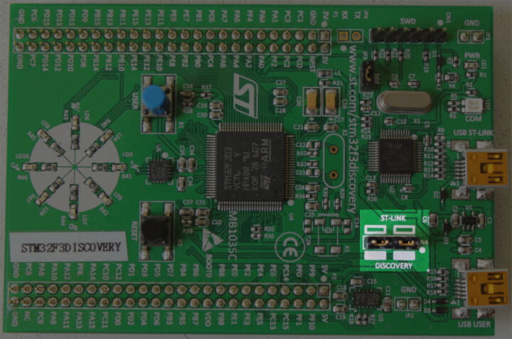

تأیید نصب
در این بخش بررسی میکنیم که برخی از ابزارها/درایورهای لازم درست نصب و پیکربندی شده باشند.
لپتاپ / PC خود را با یک کابل Mini-USB به برد discovery وصل کنید. برد discovery دو رابط USB دارد؛ از رابطی استفاده کنید که برچسب «USB ST-LINK» دارد و در وسط لبهٔ برد قرار گرفته است.
همچنین بررسی کنید که هدر ST-LINK لحیم شده و پر باشد. تصویر زیر را ببینید؛ هدر ST-LINK در آن مشخص شده است.

حالا دستور زیر را اجرا کنید:
openocd -f interface/stlink.cfg -f target/stm32f3x.cfg
توجه: نسخههای قدیمی openocd، از جمله نسخهٔ 0.10.0 که در سال 2017 منتشر شد، فایل جدید (و ترجیحی)
interface/stlink.cfgرا ندارند؛ در عوض ممکن است لازم باشد ازinterface/stlink-v2.cfgیاinterface/stlink-v2-1.cfgاستفاده کنید.
باید خروجی زیر را بگیرید و برنامه باید کنسول را مسدود کند:
Open On-Chip Debugger 0.10.0
Licensed under GNU GPL v2
For bug reports, read
http://openocd.org/doc/doxygen/bugs.html
Info : auto-selecting first available session transport "hla_swd". To override use 'transport select <transport>'.
adapter speed: 1000 kHz
adapter_nsrst_delay: 100
Info : The selected transport took over low-level target control. The results might differ compared to plain JTAG/SWD
none separate
Info : Unable to match requested speed 1000 kHz, using 950 kHz
Info : Unable to match requested speed 1000 kHz, using 950 kHz
Info : clock speed 950 kHz
Info : STLINK v2 JTAG v27 API v2 SWIM v15 VID 0x0483 PID 0x374B
Info : using stlink api v2
Info : Target voltage: 2.919881
Info : stm32f3x.cpu: hardware has 6 breakpoints, 4 watchpoints
ممکن است محتوا دقیقاً یکی نباشد، اما باید خط آخر دربارهٔ breakpointها و watchpointها را ببینید. اگر آن را دیدید، فرایند OpenOCD را متوقف کنید و به بخش بعد بروید.
اگر خط «breakpoints» را نگرفتید، یکی از دستورهای زیر را امتحان کنید.
openocd -f interface/stlink-v2.cfg -f target/stm32f3x.cfg
openocd -f interface/stlink-v2-1.cfg -f target/stm32f3x.cfg
اگر یکی از این دستورها کار کرد، یعنی نسخهٔ سختافزاری قدیمیای از برد discovery دارید. این مشکلی ایجاد نمیکند، اما این نکته را به خاطر بسپارید، چون بعداً باید کارها را کمی متفاوت پیکربندی کنید. میتوانید به بخش بعد بروید.
اگر هیچیک از دستورها با کاربر عادی کار نکرد، آنها را با دسترسی root اجرا کنید (مثلاً sudo openocd ..). اگر دستورها با دسترسی root کار کردند، بررسی کنید که قواعد udev درست تنظیم شده باشند.
اگر به اینجا رسیدهاید و OpenOCD کار نمیکند، لطفاً یک مسئله باز کنید تا کمکتان کنیم!